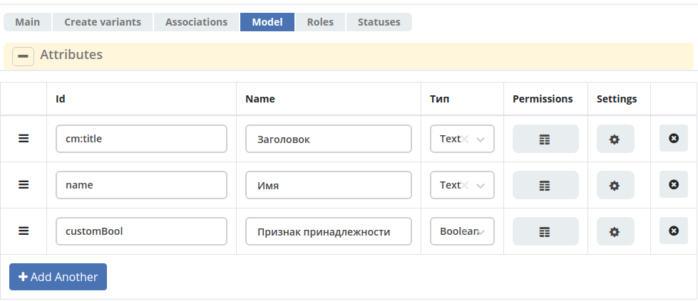
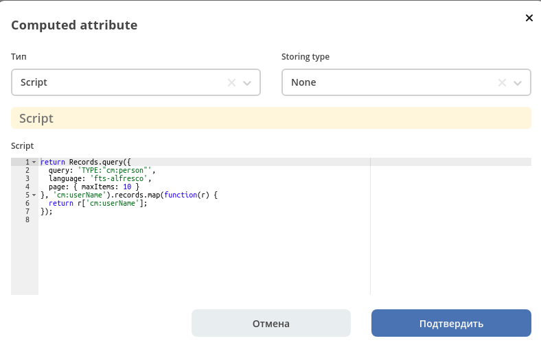
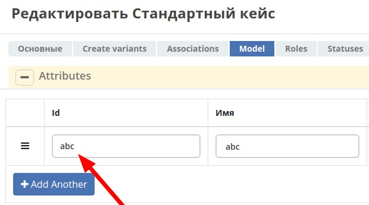
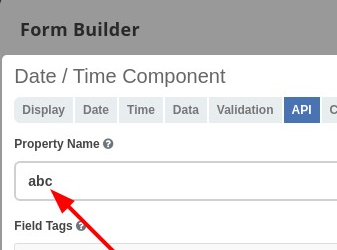
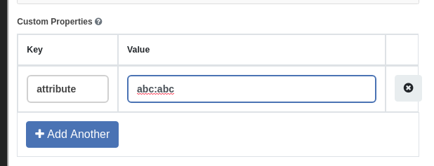

Хранение данных (Модель)¶
Ecos data model¶
При редактировании типа кейса есть возможность настроить атрибуты типа на вкладке “Модель”.
{kind=link}
Id - идентификатор поля, по которому оно будет доступно на форме, в журнале и других местах.
Name - имя поля для отображения пользователю
Тип - тип поля. Поддерживаются:
Text - текстовые данные;
Association - связь с другой сущностью;
Boolean - булево значение да/нет;
Number - число;
Date - дата;
DateTime - дата с временем;
Content - содержимое. Как правило поля с этим типом используются для сохранения больших объемов данных. Например - содержимое документа. Рекомендуется использовать только если стандартный cm:content не подходит;
Computed - настройка динамически вычисляемого атрибута
Атрибуты модели¶
Вычислямеые атрибуты¶
{kind=link}
Тип - тип вычисляемого атрибута. Поддерживаются:
Script - вычисление атрибута на основе javascript’а;
Attribute - вычисление атрибута на основе другого атрибута (можно делать алиас на глубоко вложенный атрибут. Например: idocs:counterparty.idocs:fullOrganizationName?str);
Value - константное значение;
Template - шаблонная строка. Можно использовать вставки вида ${…}. Например: ${someAttribute?str}. Вместо данного плейсхолдера будет подставлено значение укзанного атрибута;
Counter - значение будет генерироваться по счетчику при создании документа и не меняться со временем;
Storing type - тип сохранения
Определяет нужно или нет сохранять вычисленное значение и если да, то в какие моменты. Возможные значения:
None - сохранение не нужно. При каждом обращении вычисляем значение заново;
On empty - сохранять вычисленное значение только если сохраненное значение отсутствует (т.е. при запросе значения вернулся null);
On create - сохранять вычисленное значение только после создания. Последующие мутации никак данный атрибут не затронут и он будет работать как обычный атрибут.
On mutate - сохранять вычисленное значение при каждой мутации. В случае использования Records API для изменения записи гарантируется актуальность значения.
Возможности атрибута с типом script¶
Объекты в глобальной области видимости:
Records - адаптер для RecordsService;
value - текущий документ;
log - логгер;
Описание value:
Свойства:
id: String //глобальный идентификатор записи
localId: String //локальный идентификатор записи
Методы:
load(attributes: Any?): Any? // загрузка атрибутов у текущей записи. Можно передавать массив, строку и объект <String, String>
Описание Records:
Методы:
get(recordRef: String): AttValueScriptCtx // возвращает объект аналогичный value, который описан выше
query(query: Object, attributes: Any?) // возвращает объект вида:
{
"records": [
{
"id": "workspace://...",
"attribute0": "value0",
"attribute1": "value1"
},
{
"id": "workspace://...",
"attribute00": "value00",
"attribute11": "value11"
}
],
"totalCount": 123
"hasMore": true
}
Права на атрибуты (Type Permission)¶
Использование атрибутов модели на форме¶
Для использование атрибутов на форме нужно, чтобы Id атрибута соответствовал значению Property Name на форме.
Если Id атрибута содержит двоеточие “:”, то следует на форме использовать Custom Properties → attribute (если двоеточия нету, то Property Name более чем достаточно).
  {kind=link}
{kind=link}
{kind=link}
Настройка статусов¶
Пример модели журнала¶
//Journal
{
// Идентификатор журнала. Должен быть уникальным в пределах системы.
"id": "String",
// Название журнала для отображения в интерфейсе
"label": "MLText",
// Источник данных (ID микросервиса (или alfresco) + "/" + ID из RecordsDao)
// см. sourceId в RecordsQuery
"sourceId": "String",
// Запись, из которой будут загружаться метаданные для атрибутов если они не заданы явно (защищенность, заголовок, тип и др.)
"metaRecord": "RecordRef",
// Тип ECOS, для которого мы описываем журнал. См. статью "Типы кейсов"
"typeRef": "RecordRef",
// Базовый предикат для поиска записей
"predicate": "Predicate",
// Группировка записей по атрибуту
"groupBy": "String[]",
// Сортировка по умолчанию
"sortBy": "JournalSortBy[]",
// Действия
"actions": "RecordRef[]",
// Можно ли редактировать записи в таблице
"editable": "Boolean",
// Конфигурация колонок
"columns": "JournalColumn[]",
// Описание вычисляемых атрибутов для сложной логики. Атрибуты будут видны для всех колонок
"computed": "ComputedParam[]".
// Доп. свойства, которые очень специфичные
// для узкого круга задач или для временных параметров
"attributes": "ObjectData"
}